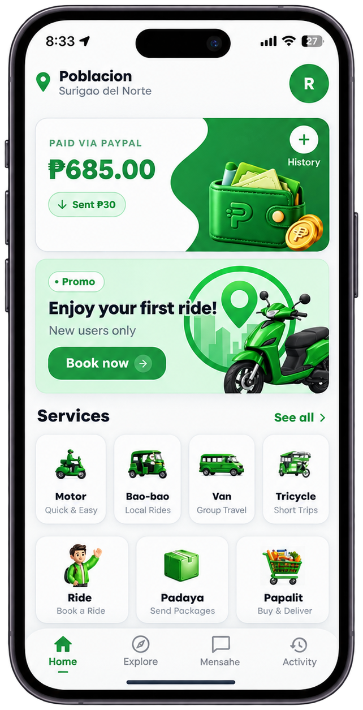
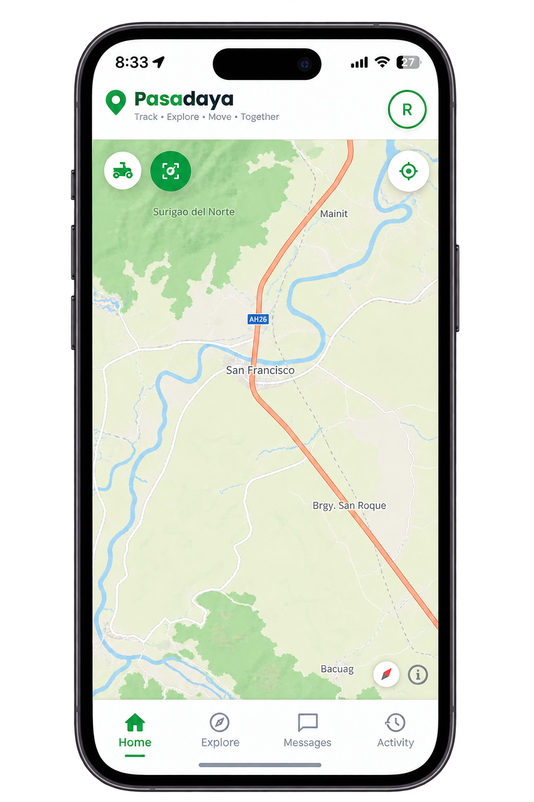

A quick look at the Passenger app, the Driver app, and the web Admin dashboard — each designed for its own kind of user.

Passenger AppHome & booking screen

Driver AppLive map & tracking screen
Admin DashboardRide monitor & driver verification
All three interfaces share the same PasaDaya green-and-white palette, rounded components, and clear typography — so switching between apps never feels unfamiliar.
Deep green #1F7A46 as the primary action color, paired with a warm off-white background for readability.
Poppins for headings, Inter for body text — a friendly but professional pairing suited for public-service tools.
Rounded cards, pill-shaped buttons, and soft shadows keep the interface approachable for all ages of commuters.